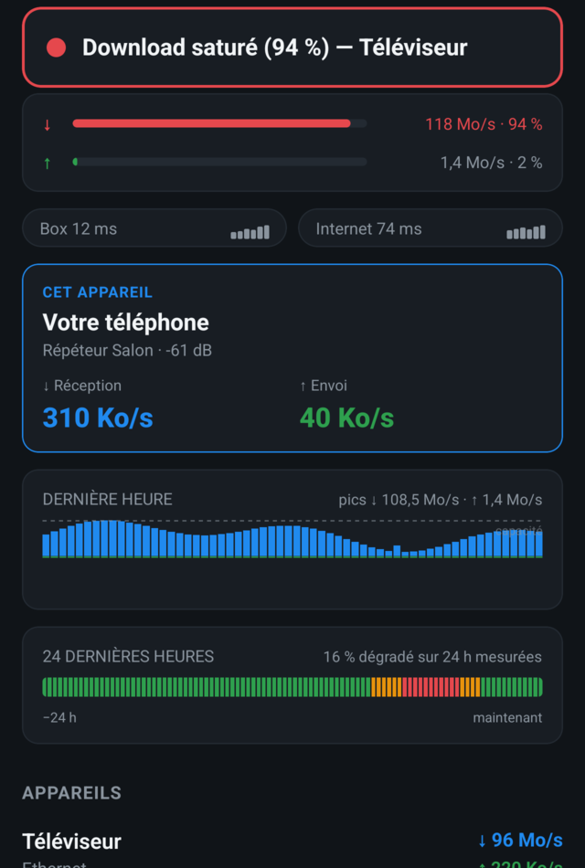

Freebox · symptôme
Freebox lente le soir : quelqu'un chez vous mange la ligne.
À 21 h, tout le monde est rentré et tout le monde se connecte en même temps. Quand la Freebox rame à cette heure-là, la cause tient rarement à Free : un appareil du foyer remplit la ligne, et il ne le dit à personne.
Les suspects habituels à 21 h
- Le téléviseur du salon qui télécharge un film ou une série en 4K avant de la lire.
- La console qui rapatrie une mise à jour de jeu. Cinquante à cent gigaoctets, lancés sans prévenir au premier allumage de la soirée.
- Un téléphone ou une tablette qui met ses applications à jour dès qu'il retrouve le Wi-Fi.
- Un Mac ou un NAS qui envoie sa sauvegarde dans le cloud. Là, c'est la moitié envoi de la ligne qui se remplit, et la visio en souffre la première.
Vus depuis le canapé, ces quatre cas se ressemblent : ça rame. Ils ne se règlent pas de la même façon, et on ne peut pas régler ce qu'on n'a pas nommé.
Ce que Freenetic affiche
Download saturé (94 %) — Téléviseur
Le verdict tient en une phrase, en tête d'écran, et il est réévalué chaque seconde. Le pourcentage dit à quel point la ligne est pleine, et le nom dit qui la remplit.
Sous le verdict, la liste de vos appareils avec leur débit de réception et d'envoi en direct, celui qui consomme le plus en tête. Vous n'avez plus à faire le tour des chambres pour demander qui télécharge : vous savez qui, combien, et depuis quand.
Sur Mac, l'app va un cran plus loin et nomme aussi l'application responsable quand le coupable est le Mac lui-même.

Et hier soir, c'était quoi ?
On ouvre ce genre d'app après la panne, jamais pendant. Freenetic garde la dernière heure minute par minute, et les 24 dernières heures colorées selon l'état de la ligne. Le téléchargement de 3 h du matin ne s'échappe plus, et vous pouvez montrer à la personne concernée à quelle heure sa console a pris toute la ligne.
Si le verdict est vert
Rien d'anormal — ligne utilisée à 1 %
Ce n'est ni la box, ni le foyer. Le site ou le service que vous utilisez rame chez lui, ou la ligne a un souci côté Free. Vous pouvez arrêter de redémarrer des choses au hasard.
Troisième cas : la ligne est vide, mais tout saccade quand même. Le débit n'y est pour rien, et il faut regarder le Wi-Fi dans la pièce où vous êtes.
Ce que vous faites ensuite
Une fois le coupable nommé, la solution est courte : mettre le téléchargement en pause, programmer les mises à jour de la console la nuit, ou décaler la sauvegarde du NAS. Freenetic ne coupe rien et ne bride personne. Il vous dit juste à qui parler.
Freenetic fonctionne avec les Freebox Révolution, Delta, Pop et Ultra, en mode routeur. Téléchargement gratuit, 7 jours d'essai complet sur Mac, puis un achat unique à partir de 5,99 €. Pas de compte, pas de cloud : l'app parle à la box sur votre réseau local et s'arrête là.

Mac, iPhone, iPad et Android. Le pack acheté chez Apple couvre les trois appareils Apple et débloque aussi Android.